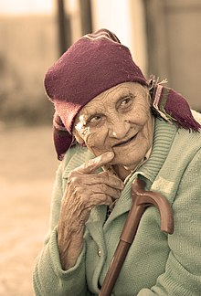
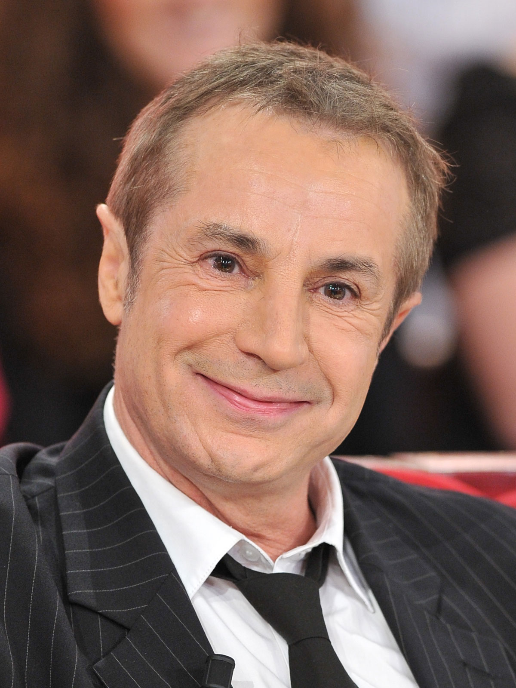

Dr Perrin , expert en addictologie, ce site a pour but de sensibilisé les personnes en particulier le plus gens d'entre nous
au rique engendrer par les addiction , tels que la drogue ou encore l'alcool en passant par les gens vidéo.
J'ai donc concue ce site web pour permetre une prise de concience des personnes
dans un pemier temps mais aussi pour proposer des solutions a ces personnes concerners pour poouvoir ensemble depasser ces troubles addictif.
Suite a la perte de proche ayant sombré dans l'addiction de l'alcool , j'ai penser a crée ce site pour aider et accompagné les personnes adicte et surmonté ce trouve tous ensemble.
C'est pourquoi vous pourrez trouver ici , des numeros vert ou encore des sollution pour combatre ces addictions.
Pour ce faire , les specialiste :
Dr Dhon
Médecin généraliste spécialiste en médecine générale, tabacologie et addictologie, enseignante à l'université de Bordeaux
Formation
Spécialiste de médecine générale - Université Bordeaux Segalen
Maître de stage universitaire - Université Bordeaux Segalen
DIU Tabacologie - Université Paris 6 - Paul Brousse
D.U. Alcoologie et pratiques addictives - Université Bordeaux Segalen
D.I.U. Télémédecine - Université Bordeaux Segalen
Expériences
Depuis 2017 Cabinet - Bordeaux
2000 - 2016 Cabinet - Artigues-Près-Bordeaux
DIU Tabacologie - Université Paris 6 - Paul Brousse
2014 - 2016 Médecin coordonnateur - ANPAA33 (Association Nationale de Prévention et Accompagnement en Addictologie)
Prix et distinctions
2018 Prix national de thèse - Congrès Sommeil Berlin
2016 Challenge New Health - Hopitaux de France
Coach Filtz
Specialite de remise en forme. Pour combattre l'addiction par le sport BOUMMM !!!

Formation
Décembre 2015 – CESA : BPJEPS – Activités Gymniques de la Forme et de la Force
Octobre 2013 – Université Paris-Ouest : Master 2 - Energétique et Matériaux
Competences et techniques
Fitness, musculation
Boxe, karaté
Stretching, auto-massages
Aromathérapie, phytothérapie
Nutrition, compléments alimentaires
Kettlebells, élastiques, TRX, etc
Resultat sportiif
Karaté : 3ème - Coupe de France 2013
Karaté : 1er - Open de Folkestone 2012
Comportementaliste Gerald.

Formation
A appris dans le tat
Competences et techniques
Parle avec les annimaux
Parle avec les humains
Parle tous seul
Ecrit
L'Éducation du chien, de 0 à 6 mois, Éditions de l'Homme, Montréal, 1981
Le chat cet inconnu, Édition Vander, Bruxelles, 1985-1989-2000
Le chien qui vous convient, Le Jour, Montréal, 2001
Un homme
Une femme
Standardiste
Ken specialite de tous se qui est repondre au telephone et s'occuper des papiers administratif